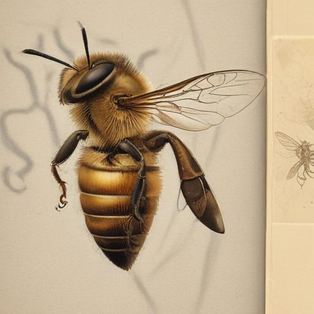
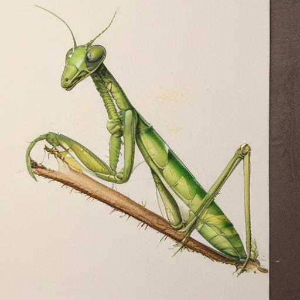
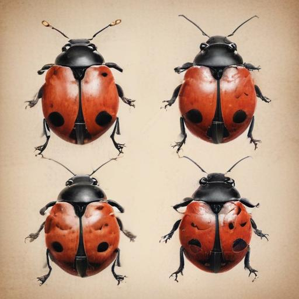

오늘의 곤충 소개 🌟
벌 🐝

사마귀 🦗

개미 🐜

나비 🦋

딱정벌레 🪲

잠자리 💫

메뚜기 🦗

기타 곤충 🐛

다양한 곤충들
우리 주변에는 정말 많은 종류의 곤충들이 살고 있어요.
- 매미, 귀뚜라미, 사슴벌레 등이 있어요
- 각자 특별한 능력이 있어요
- 모두 자연을 아름답게 만들어요



우리 주변에는 정말 많은 종류의 곤충들이 살고 있어요.